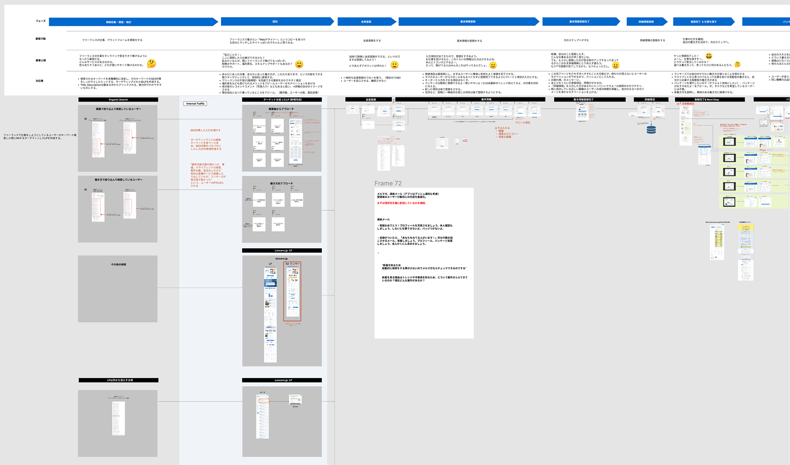

Lancers' freelancer registration had a high drop-off rate — many new users abandoned the process before completing their profiles, which directly impacted the platform's ability to match clients with qualified talent. A complete profile is the single biggest predictor of a freelancer's success on the platform.
I led a UX redesign of the entire onboarding flow, from initial sign-up through profile completion, with the goal of reducing friction and guiding new freelancers to a "match-ready" state as quickly as possible.
The new onboarding flow launched and delivered measurable improvements: